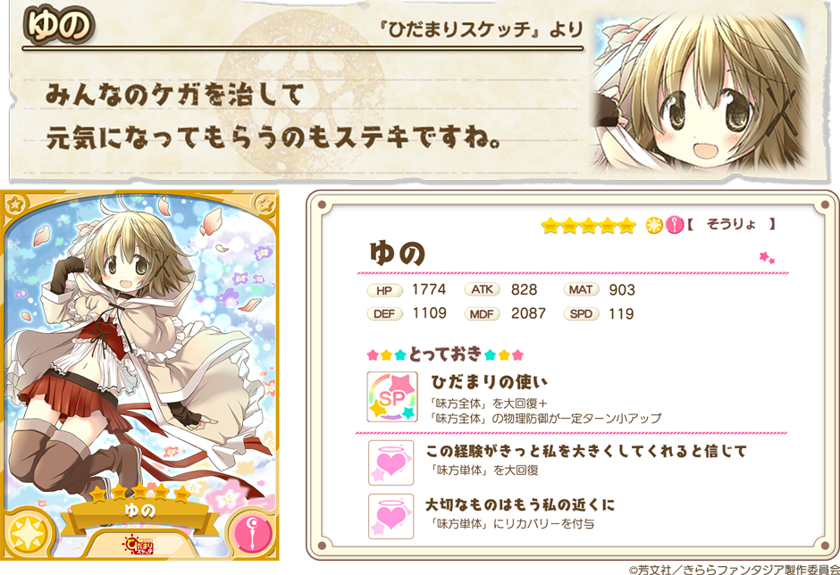
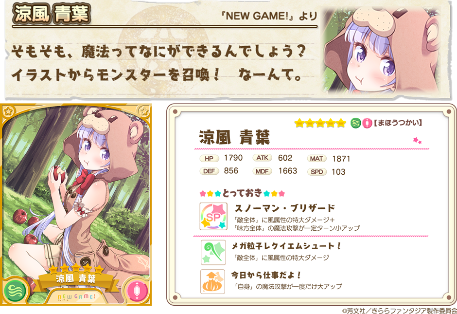

『きららファンタジア』をご利用いただき、誠にありがとうございます。
1月16日15:00より、「ひだまりスケッチ」「NEW GAME!」のキャラクターがピックアップされた「セレクション召喚」を開催いたします。
2018年1月16日 15:00 ～ 2018年1月22日 16:59
・10回召喚では★4以上のキャラクターが1体以上確定します。
・初回のみ星彩石300個で10回召喚が可能です。
・本召喚のピックアップ対象キャラクターの詳細につきましては、ゲーム内の召喚画面＞出現一覧からご確認下さい。


※表示されているキャラクターイラストは進化前のものです。
※表示されているステータスは、進化前キャラクターの最大LV（限界突破4回）時のものです。
・提供割合の詳細はゲーム内の召喚画面＞提供割合からご確認ください。
・ピックアップ対象のキャラクターは同じレアリティの他のキャラクターよりも提供割合が高く設定されています。
・キャンペーン内容は予告なく変更になる場合がございます。ご了承ください。
今後とも『きららファンタジア』をよろしくお願いいたします。